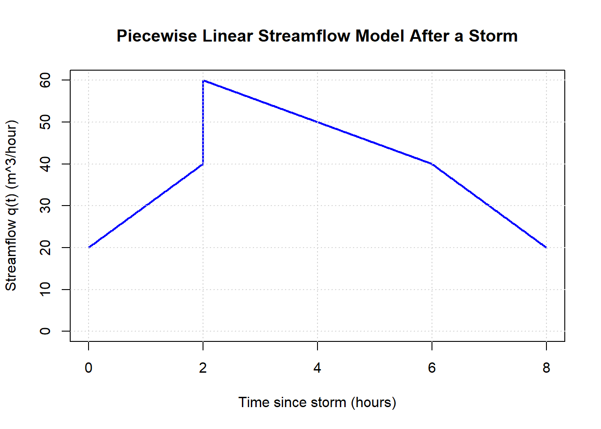
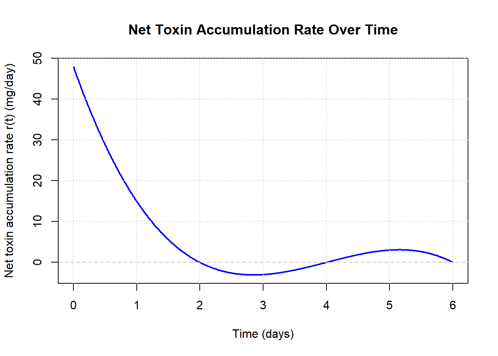
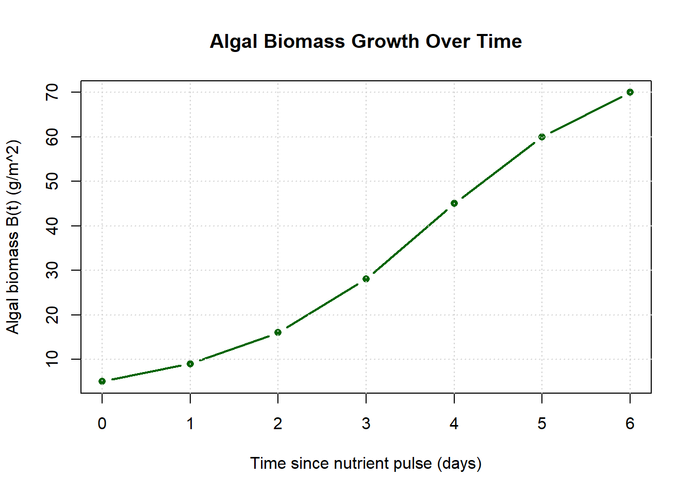

Chapter 11 Week 1 In-Class: Riemann Sums → Derivatives → Antiderivatives
This class session is structured around three connected ideas:
1. Approximating accumulation using Riemann sums [FOCUS]
2. Practicing derivatives as rates of change
3. Previewing antiderivatives as a way to undo rates
The emphasis is on reasoning, interpretation, and sketches, not speed.
11.1 Area Under The Curve
Environmental Context: Streamflow After a Storm
After a heavy rain event, the streamflow in a small watershed changes over the course of the day. Hydrologists model the streamflow rate \(q(t)\) (in cubic meters per hour) as a piecewise linear function of time \(t\) (in hours since the storm began).
The streamflow is given by:
\[ q(t) = \begin{cases} 20 + 10t, & 0 \le t < 2 \\ 60 - 5(t - 2), & 2 \le t < 6 \\ 40 - 10(t - 6), & 6 \le t \le 8 \end{cases} \]

A. Understanding the Model
- In words, describe what is happening to the streamflow during each time interval:
- \(0 \le t < 2\)
- \(2 \le t < 6\)
- \(6 \le t \le 8\)
B. Calculating Accumulated Water Volume
The total volume of water that flows past a point in the stream is given by the area under the streamflow curve.
Explain why the area under \(q(t)\) represents total water volume. Use the units of the problem to back up your argument
Using simple geometric shapes (rectangles and triangles) calculate the total volume accumulated in the intervals:
- \(0 \le t < 2\)
- \(2 \le t < 6\)
- \(6 \le t \le 8\)
Compute the total area under \(q(t)\) from \(t = 0\) to \(t = 8\).
C. Interpretation
- What does your final numerical value represent physically?
- During which 1 hour interval did the stream contribute the largest amount of water? Why?
- If you were estimating this area using rectangles instead of exact geometry, where would your approximation likely overestimate or underestimate the true value?
- Assume you are using 8 sub-intervals (n=8)
- State how you are deciding on the ‘height’ of the rectangles
- No calculations - just make a graphical reasoning
Environmental Context: Ocean Salinity with Depth
In coastal and open-ocean systems, the salt concentration of seawater varies with depth due to surface freshwater input, vertical mixing, and stratification. One way to summarize how salt is distributed through the water column is to examine how salt concentration changes with depth.
Let \(C(z)\) be the salt concentration (in kg/m\(^3\)) as a function of depth \(z\) (in meters), measured downward from the ocean surface. Suppose the concentration profile is modeled by the piecewise linear function:
\[ C(z) = \begin{cases} 32.6 + 0.010z, & 0 \le z < 30 \\ 32.9 + 0.015(z - 30), & 30 \le z < 150 \\ 34.7 + 0.002(z - 150), & 150 \le z \le 300 \end{cases} \]

NOTE: This plot rotates the axis so that the independent variable is on the y axis - this is common when looking at vertical profiles as it feel more intuitive (depth is down).
Carefully think about how this impacts the ‘area’ your are calculating.
A. Understanding the Model
- In words, describe what is happening to the salt concentration during each depth interval:
- \(0 \le z < 30\)
- \(30 \le z < 150\)
- \(150 \le z \le 300\)
B. Calculating Accumulated Salt Content Over Depth
The total salt content per unit horizontal area in the water column can be represented by the area under the concentration curve.
Explain why the area under \(C(z)\) represents total salt content per unit area.
Use the units of the problem to support your explanation.Using simple geometric shapes (rectangles and triangles), calculate the accumulated salt content in the intervals:
- \(0 \le z < 30\)
- \(30 \le z < 150\)
- \(150 \le z \le 300\)
Compute the total area under \(C(z)\) from \(z = 0\) to \(z = 300\).
11.2 Riemann Sums
Environmental Context: Algal Biomass Growth Over Time
After a nutrient pulse, algal biomass in a lake or coastal system can increase rapidly. Ecologists often measure biomass at discrete time points and use these data to estimate the total biomass accumulated over a given time period.
Let \(B(t)\) represent algal biomass density (in g/m\(^2\)) measured at time \(t\) (in days) after the nutrient input.
Observed Data
| Time \(t\) (days) | 0 | 1 | 2 | 3 | 4 | 5 | 6 |
|---|---|---|---|---|---|---|---|
| \(B(t)\) (g/m\(^2\)) | 5 | 9 | 16 | 28 | 45 | 60 | 70 |
A. Plotting the Data
Sketch a plot of algal biomass versus time.
Describe how the biomass changes over time.
B. Left-Hand Riemann Sum
A Riemann sum is written as \[ \sum_{i=1}^{n} f(x_i^*)\,\Delta x. \]
The width of the rectangles \[ \Delta x = \frac{b - a}{n}. \]
Left Riemann sum:
\[ x_i^* = a + (i - 1)\Delta x \]Right Riemann sum:
\[ x_i^* = a + i\Delta x \]Midpoint Riemann sum:
\[ x_i^* = a + \left(i - \tfrac{1}{2}\right)\Delta x \]
Note:
- a is the left edge of the interval we are interested in
- b is the right edge of the interval
Use the data to approximate the total accumulated biomass from \(t = 0\) to \(t = 6\) using \(n = 3\)
- Identify the subinterval width \(\Delta t\).
- Using left endpoints expression above, create a table of \(x_i\) and\(f(x_i)\).
- Compute the numerical value of the Riemann sum.
- State the units of your result and explain what the number represents physically.
C. Right-Hand Riemann Sum
Repeat the approximation using right endpoints.
- Write the right-hand Riemann sum,
- Using right endpoints expression above, create a table of \(x_i\) and\(f(x_i)\).
- Compute the numerical value of the Riemann sum.
- Compare this result to the left-hand sum.
- Which is larger?
- Why does this make sense given the shape of the graph?
D. Midpoint Riemann Sum
Now approximate the accumulated biomass using the midpoint rule.
- Identify the midpoint of each time interval
- Using mid-point expression above, create a table of \(x_i\) and\(f(x_i)\).
- Compute the midpoint Riemann sum.
- Compare this value to the left- and right-hand sums.
E. Effect of Changing the Number of Intervals
Now re-calculate the Left Hand Riemann Sum with more sub-intervals \(n = 6\).
- Calculate an approximate total biomass using \(n = 6\)
- Comment on which you think is a better estimate?
- Do you think going to \(n = 12\) for this dataset would give you better results? [trick question]
Environmental Context: Net Toxin Uptake vs. Elimination
A fish living in a contaminated lake sometimes absorbs toxin (through feeding/exposure) and sometimes eliminates toxin (through metabolism and excretion). Let \(r(t)\) represent the net rate of toxin accumulation in the fish (in mg/day), where:
- \(r(t) > 0\): net uptake (toxin is increasing in the fish)
- \(r(t) < 0\): net elimination (toxin is decreasing in the fish)
Suppose the net rate is modeled by the cubic function:
\[ r(t) = (t-2)(6-t)(t-4) \quad \text{for } 0 \le t \le 6 \]

A. Left-Hand Riemann Sum (6 intervals)
Use a left-hand Riemann sum with 6 equal subintervals on \([0,6]\) to approximate the accumulation.
Compute \(\Delta t\).
Instead of calculating the total sum, this time just generate a list of the 6 rectangles and their area. In other words do the \(f(x_i) \Delta x\) part of the Riemann sum without adding everything together
B. NET Accumulation (Signed Accumulation)
The net change in toxin burden over the 6-day period is approximated by the signed area under \(r(t)\). Signed means we include the signs.
Using your left-hand Riemann sum from Part A, estimate the NET accumulation of toxin in the fish over \(0 \le t \le 6\).
Interpret your answer:
- Is the fish ending the period with more toxin or less toxin than it started with?
- Include units.
C. Total Exchange (Total Toxin Processed)
The total exchange counts both uptake and elimination as positive contributions. This corresponds to the area under \(|r(t)|\). The absolute function here ignores the signs.
- Using the same 6-subinterval partition and left endpoints, compute the left-hand Riemann sum approximation for:
\[ \int_{0}^{6} |r(t)|\,dt \]
That is, compute:
\[ \sum_{i=1}^{6} |r(t_{i-1})|\,\Delta t \]
- Interpret your result:
- What does this number represent physically?
- Why is it always nonnegative?
11.3 Practice: Differentiation Rules
For each function, compute the derivative. Clearly indicate which rule(s) you are using. You can find the rules on in the equation sheet tab of the textbook.
11.3.1 Product Rule
An ecologist models total nutrient uptake as the product of plant biomass and nutrient concentration:
\[ f(t) = (2t^2 + 1)(5t - 3) \]
Find \(f'(t)\).
11.3.2 Chain Rule
Water temperature in a lake varies with depth, and a biological response depends exponentially on temperature:
\[ g(z) = e^{0.4z^2} \]
Find \(g'(z)\).
11.4 Practice: Very Simple Antiderivatives
For each function, find one antiderivative.
(You do not need to include a constant of integration yet.)
- \[ f(x) = 3x^2 \]
- \[ g(t) = 5 \]
- \[ h(x) = 2x \]
- \[ p(t) = e^t \]
- \[ q(x) = \cos x \]
Check your answers by taking the derivative of them (extra derivative practice)
SOLUTIONS
Click to Unlock Solutions
**✅ Solution Key — Area Under the Curve (Streamflow After a Storm){-}
Note: The function has a jump at \(t=2\). A single-point jump does not affect area, so the accumulated volume is still well-defined.
A. Understanding the Model
\[ q(t) = \begin{cases} 20 + 10t, & 0 \le t < 2 \\ 60 - 5(t - 2), & 2 \le t < 6 \\ 40 - 10(t - 6), & 6 \le t \le 8 \end{cases} \]
- \(0 \le t < 2\)
Streamflow is increasing linearly:- \(q(0)=20\) m\(^3\)/hr
- \(q(2^-)=20+10(2)=40\) m\(^3\)/hr
Interpretation: runoff is building after the storm begins.
- \(2 \le t < 6\)
Streamflow decreases slowly and linearly:- \(q(2)=60\) m\(^3\)/hr
- \(q(6)=60-5(6-2)=40\) m\(^3\)/hr
Interpretation: flow recedes after the peak.
- \(6 \le t \le 8\)
Streamflow decreases faster:- \(q(6)=40\) m\(^3\)/hr
- \(q(8)=40-10(8-6)=20\) m\(^3\)/hr
Interpretation: returning toward baseline.
B. Calculating Accumulated Water Volume
B1. Why area under \(q(t)\) is volume (units)
- \(q(t)\) has units: \(\text{m}^3/\text{hour}\)
- Multiply by time (hours):
\[ \left(\frac{\text{m}^3}{\text{hr}}\right)(\text{hr})=\text{m}^3 \] So the area under \(q(t)\) over a time interval gives total water volume (m\(^3\)).
B2. Volume on each interval (rectangles + triangles)
Because the streamflow is linear on each interval, the area under \(q(t)\) can be computed by decomposing each region into rectangles and triangles.
Interval 1: \(0 \le t < 2\)
- Minimum flow on this interval: \(20\) m\(^3\)/hr
- Flow increases by \(40 - 20 = 20\) m\(^3\)/hr over 2 hours
Break the region into: - A rectangle of height \(20\) and width \(2\) - A triangle with base \(2\) and height \(20\)
\[ V_1 = (20)(2) + \tfrac{1}{2}(2)(20) = 40 + 20 = 60\ \text{m}^3 \]
Interval 2: \(2 \le t < 6\)
- Flow decreases from \(60\) to \(40\) m\(^3\)/hr
- Minimum flow: \(40\) m\(^3\)/hr
- Decrease of \(20\) m\(^3\)/hr over 4 hours
Break the region into: - A rectangle of height \(40\) and width \(4\) - A triangle with base \(4\) and height \(20\)
\[ V_2 = (40)(4) + \tfrac{1}{2}(4)(20) = 160 + 40 = 200\ \text{m}^3 \]
Interval 3: \(6 \le t \le 8\)
- Flow decreases from \(40\) to \(20\) m\(^3\)/hr
- Minimum flow: \(20\) m\(^3\)/hr
- Decrease of \(20\) m\(^3\)/hr over 2 hours
Break the region into: - A rectangle of height \(20\) and width \(2\) - A triangle with base \(2\) and height \(20\)
\[ V_3 = (20)(2) + \tfrac{1}{2}(2)(20) = 40 + 20 = 60\ \text{m}^3 \]
B3. Total volume from \(t=0\) to \(t=8\)
\[ V_{\text{total}} = V_1+V_2+V_3 = 60+200+60 = 320\ \text{m}^3 \]
\[ \boxed{V_{\text{total}} = 320\ \text{m}^3} \]
C. Interpretation
C1. What does the final value represent?
\[ \boxed{320\ \text{m}^3} \] is the total volume of water that flowed past the point during the 8-hour period.
C2. During which 1-hour interval is the volume largest?
Largest interval is: \[ \boxed{[2,3]\ \text{hours} \text{ with } 57.5\ \text{m}^3} \]
Why: it starts at the highest flow (60) and remains high through that hour.
C3. Overestimate vs underestimate using rectangles (graphical reasoning only)
We partition \([0,8]\) into \(n=8\) equal subintervals, so each rectangle has width \[ \Delta t = \frac{8-0}{8} = 1\ \text{hour}. \]
To decide the height of each rectangle, we must choose a sampling rule. Two common choices are:
- Left-hand rectangles: height on \([k,k+1]\) is \(q(k)\)
- Right-hand rectangles: height on \([k,k+1]\) is \(q(k+1)\)
Now use only the shape of the graph:
- On \(0 \le t < 2\), the streamflow is increasing.
- Left-hand rectangles use the smaller value at the start of each interval, so they will tend to underestimate the area here.
- Right-hand rectangles use the larger value at the end of each interval, so they will tend to overestimate the area here.
- On \(2 \le t \le 8\), the streamflow is decreasing.
- Left-hand rectangles use the larger value at the start of each interval, so they will tend to overestimate the area here.
- Right-hand rectangles use the smaller value at the end of each interval, so they will tend to underestimate the area here.
Conclusion (graph-based): - Left-hand sum: underestimate on \([0,2)\), overestimate on \([2,8]\). - Right-hand sum: overestimate on \([0,2)\), underestimate on \([2,8]\).
Because the graph is decreasing for most of the interval (from \(t=2\) to \(t=8\)), you should expect the left-hand method to have a stronger tendency to overestimate overall, while the right-hand method tends to underestimate overall.
(If you want to visualize this: draw the rectangles on the graph and notice whether the tops of the rectangles mostly sit above or below the curve on each region.)
✅ Solution Key — Ocean Salt Concentration with Depth
Important note about the rotated plot:
Even though the plot puts depth \(z\) on the vertical axis, the accumulated quantity we want is still the same mathematical idea: \[ \text{Total salt content per unit area} \;=\; \int_0^{300} C(z)\,dz. \] The “area under the curve” refers to multiplying concentration by thickness.
Graph orientation does not change the calculation—just be careful about what the axes represent.
A. Understanding the Model
\[ C(z) = \begin{cases} 32.6 + 0.010z, & 0 \le z < 30 \\ 32.9 + 0.015(z - 30), & 30 \le z < 150 \\ 34.7 + 0.002(z - 150), & 150 \le z \le 300 \end{cases} \]
\(0 \le z < 30\)
Salt concentration increases slightly with depth (a weak gradient near the surface).
This is consistent with surface water being a bit fresher due to precipitation or river input.\(30 \le z < 150\)
Salt concentration increases more rapidly with depth (a stronger gradient).
This is a typical halocline region where stratification is stronger.\(150 \le z \le 300\)
Salt concentration still increases, but only very slowly (nearly uniform deeper water).
B. Calculating Accumulated Salt Content Over Depth
B1. Why area under \(C(z)\) is “salt content per unit area” (units)
- \(C(z)\) has units: \(\text{kg}/\text{m}^3\)
- A thin layer of water with thickness \(dz\) has units: \(\text{m}\)
Multiplying: \[ \left(\frac{\text{kg}}{\text{m}^3}\right)(\text{m}) = \frac{\text{kg}}{\text{m}^2} \]
So the accumulated area \[ \int_0^{300} C(z)\,dz \] has units \(\text{kg}/\text{m}^2\), meaning:
total mass of salt above each 1 m\(^2\) patch of ocean surface in the top 300 m.
B2. Accumulated salt content on each interval (rectangles + triangles)
Because \(C(z)\) is linear on each interval, we compute area using rectangles + triangles.
Interval 1: \(0 \le z < 30\)
Compute endpoint concentrations: \[ C(0)=32.6 \] \[ C(30^-)=32.6+0.010(30)=32.9 \]
Change in concentration over the interval: \[ 32.9-32.6=0.3 \]
Break into:
- Rectangle: height \(32.6\), width \(30\)
- Triangle: base \(30\), height \(0.3\)
\[ A_1 = (32.6)(30) + \tfrac12(30)(0.3) = 978 + 4.5 = 982.5\ \frac{\text{kg}}{\text{m}^2} \]
Interval 2: \(30 \le z < 150\)
Compute endpoint concentrations: \[ C(30)=32.9 \] \[ C(150^-)=32.9+0.015(150-30)=32.9+0.015(120)=32.9+1.8=34.7 \]
Change in concentration: \[ 34.7-32.9=1.8 \]
Width: \[ 150-30=120 \]
Break into:
- Rectangle: height \(32.9\), width \(120\)
- Triangle: base \(120\), height \(1.8\)
\[ A_2 = (32.9)(120) + \tfrac12(120)(1.8) = 3948 + 108 = 4056\ \frac{\text{kg}}{\text{m}^2} \]
Interval 3: \(150 \le z \le 300\)
Compute endpoint concentrations: \[ C(150)=34.7 \] \[ C(300)=34.7+0.002(300-150)=34.7+0.002(150)=34.7+0.3=35.0 \]
Change in concentration: \[ 35.0-34.7=0.3 \]
Width: \[ 300-150=150 \]
Break into:
- Rectangle: height \(34.7\), width \(150\)
- Triangle: base \(150\), height \(0.3\)
\[ A_3 = (34.7)(150) + \tfrac12(150)(0.3) = 5205 + 22.5 = 5227.5\ \frac{\text{kg}}{\text{m}^2} \]
B3. Total accumulated salt content from \(z=0\) to \(z=300\)
\[ A_{\text{total}} = A_1 + A_2 + A_3 = 982.5 + 4056 + 5227.5 = 10266\ \frac{\text{kg}}{\text{m}^2} \]
\[ \boxed{A_{\text{total}} = 10266\ \text{kg/m}^2} \]
✅ Solution Key — Algal Biomass Growth Over Time
Observed Data
| Time \(t\) (days) | 0 | 1 | 2 | 3 | 4 | 5 | 6 |
|---|---|---|---|---|---|---|---|
| \(B(t)\) (g/m\(^2\)) | 5 | 9 | 16 | 28 | 45 | 60 | 70 |
A. Plotting the Data
Sketch: Plot the points \((t,B(t))\) and connect them with line segments.
The curve rises throughout the interval and becomes steeper over time.Description: Biomass increases over time and the rate of increase appears to accelerate (the jumps from day to day get larger, especially from \(t=3\) onward).

B. Left-Hand Riemann Sum (n = 3)
We approximate the total accumulated biomass from \(t=0\) to \(t=6\) with \(n=3\).
Width \[ \Delta t = \frac{6-0}{3} = 2\ \text{days} \]
Left endpoints
Using \(x_i^* = a + (i-1)\Delta x\) with \(a=0\) and \(\Delta t = 2\): \[ t_0=0,\quad t_1=2,\quad t_2=4 \]
Table:
| Interval | Left endpoint \(t\) | \(B(t)\) (g/m\(^2\)) |
|---|---|---|
| \([0,2]\) | 0 | 5 |
| \([2,4]\) | 2 | 16 |
| \([4,6]\) | 4 | 45 |
Compute the sum \[ L_3 = \Delta t\,[B(0)+B(2)+B(4)] = 2\,(5+16+45) = 2\cdot 66 = 132 \]
Units + meaning
- \(B(t)\) is in g/m\(^2\) and \(\Delta t\) is in days, so the sum has units: \[ (\text{g/m}^2)\cdot(\text{day}) = \text{g}\cdot\text{day}/\text{m}^2 \]
- This represents biomass-density accumulated over time (area under the \(B(t)\) curve), sometimes described as “biomass-days per square meter.”
\[ \boxed{L_3 = 132\ \text{g}\cdot\text{day}/\text{m}^2} \]
C. Right-Hand Riemann Sum (n = 3)
- Right endpoints
Using \(x_i^* = a + i\Delta x\) with \(a=0\), \(\Delta t = 2\): \[ t_1=2,\quad t_2=4,\quad t_3=6 \]
Table:
| Interval | Right endpoint \(t\) | \(B(t)\) (g/m\(^2\)) |
|---|---|---|
| \([0,2]\) | 2 | 16 |
| \([2,4]\) | 4 | 45 |
| \([4,6]\) | 6 | 70 |
2–3. Compute the sum \[ R_3 = \Delta t\,[B(2)+B(4)+B(6)] = 2\,(16+45+70) = 2\cdot 131 = 262 \]
\[ \boxed{R_3 = 262\ \text{g}\cdot\text{day}/\text{m}^2} \]
- Compare to left-hand
- \(R_3\) is larger than \(L_3\).
- This makes sense because \(B(t)\) is increasing: right-endpoint rectangles tend to sit above the curve more than left-endpoint rectangles.
D. Midpoint Riemann Sum (n = 3)
Midpoints of each interval
Intervals are \([0,2]\), \([2,4]\), \([4,6]\). Midpoints: \[ t=\;1,\;3,\;5 \]Midpoint values from data \[ B(1)=9,\quad B(3)=28,\quad B(5)=60 \]
Table:
| Interval | Midpoint \(t\) | \(B(t)\) (g/m\(^2\)) |
|---|---|---|
| \([0,2]\) | 1 | 9 |
| \([2,4]\) | 3 | 28 |
| \([4,6]\) | 5 | 60 |
- Compute the sum \[ M_3 = \Delta t\,[B(1)+B(3)+B(5)] = 2\,(9+28+60) = 2\cdot 97 = 194 \]
\[ \boxed{M_3 = 194\ \text{g}\cdot\text{day}/\text{m}^2} \]
- Compare \[ L_3 = 132,\quad M_3 = 194,\quad R_3 = 262 \] The midpoint estimate lands between left and right, which is typical for increasing data.
E. Effect of Changing the Number of Intervals
Now compute the left-hand sum with \(n=6\).
- Width \[ \Delta t = \frac{6-0}{6} = 1\ \text{day} \]
Left endpoints are: \[ t = 0,1,2,3,4,5 \]
So \[ L_6 = 1\,[B(0)+B(1)+B(2)+B(3)+B(4)+B(5)] \] \[ L_6 = 5+9+16+28+45+60 = 163 \]
\[ \boxed{L_6 = 163\ \text{g}\cdot\text{day}/\text{m}^2} \]
Which is better, \(L_3\) or \(L_6\)?
\(L_6\) is generally the better estimate because it uses more rectangles (smaller \(\Delta t\)), which better captures the change in \(B(t)\) over time.Would \(n=12\) give better results for this dataset? (trick question)
Not with the information given. We only have biomass values at integer days \(t=0,1,2,3,4,5,6\).
To use \(n=12\) (which would require \(\Delta t = 0.5\) days), we would need biomass values at half-days (e.g., \(t=0.5,1.5,2.5,\dots\)) or a model for estimating them.
So: you can’t legitimately do \(n=12\) from this dataset alone without making additional assumptions or interpolations.
F. Reflection
- Which method do you trust most? Why?
Typically the midpoint rule is most trusted because it samples the function in the middle of each interval, which often balances over/underestimation when the data trend is smooth.
However, in a data-only setting, your confidence also depends on whether midpoint values are truly measured (as they are here at \(t=1,3,5\)) or estimated.
✅ Solution Key — Net Toxin Uptake vs. Elimination
We are given the net toxin accumulation rate (mg/day): \[ r(t) = (t-2)(6-t)(t-4), \quad 0 \le t \le 6 \]
The sign of \(r(t)\) tells the direction of change in toxin burden: - \(r(t) > 0\): net uptake - \(r(t) < 0\): net elimination
A. Left-Hand Riemann Sum (6 intervals)
We split \([0,6]\) into \(n=6\) equal subintervals.
A1. Compute \(\Delta t\)
\[ \Delta t = \frac{6-0}{6} = 1\ \text{day} \]
Left endpoints are: \[ t_0=0,\ t_1=1,\ t_2=2,\ t_3=3,\ t_4=4,\ t_5=5 \]
A2. List the 6 rectangles and their areas \(r(t_i)\Delta t\)
Since \(\Delta t = 1\), each rectangle area is just \(r(t_i)\cdot 1 = r(t_i)\).
Compute \(r(t)\) at the left endpoints:
- \(r(0)=(0-2)(6-0)(0-4)=(-2)(6)(-4)=48\)
- \(r(1)=(1-2)(6-1)(1-4)=(-1)(5)(-3)=15\)
- \(r(2)=(2-2)(6-2)(2-4)=(0)(4)(-2)=0\)
- \(r(3)=(3-2)(6-3)(3-4)=(1)(3)(-1)=-3\)
- \(r(4)=(4-2)(6-4)(4-4)=(2)(2)(0)=0\)
- \(r(5)=(5-2)(6-5)(5-4)=(3)(1)(1)=3\)
Rectangle areas \(r(t_i)\Delta t\) (mg) are:
| Subinterval | Left endpoint \(t_i\) | Height \(r(t_i)\) (mg/day) | Area \(r(t_i)\Delta t\) (mg) |
|---|---|---|---|
| \([0,1]\) | 0 | 48 | 48 |
| \([1,2]\) | 1 | 15 | 15 |
| \([2,3]\) | 2 | 0 | 0 |
| \([3,4]\) | 3 | -3 | -3 |
| \([4,5]\) | 4 | 0 | 0 |
| \([5,6]\) | 5 | 3 | 3 |
B. NET Accumulation (Signed Accumulation)
The net accumulation is the signed sum of rectangle areas:
\[ \text{NET} \approx \sum_{i=1}^{6} r(t_{i-1})\Delta t \]
Using the areas from Part A: \[ \text{NET} \approx 48 + 15 + 0 + (-3) + 0 + 3 = 63 \]
\[ \boxed{\text{NET} \approx 63\ \text{mg}} \]
Interpretation
- Because the net value is positive, the fish ends the 6-day period with more toxin than it started with.
- The negative rectangle (at \(t=3\)) represents a period of net elimination, which subtracts from the total.
C. Total Exchange (Total Toxin Processed)
Total exchange counts uptake and elimination as positive contributions, so we sum \(|r(t_i)|\Delta t\):
\[ \text{TOTAL} \approx \sum_{i=1}^{6} |r(t_{i-1})|\Delta t \]
Using the same rectangle list:
\[ \text{TOTAL} \approx |48| + |15| + |0| + |-3| + |0| + |3| \] \[ \text{TOTAL} \approx 48 + 15 + 0 + 3 + 0 + 3 = 69 \]
\[ \boxed{\text{TOTAL} \approx 69\ \text{mg}} \]
Interpretation
- This represents the total amount of toxin moved through the fish (gained and eliminated combined) over the 6 days, using this rectangle approximation.
- It is always nonnegative because absolute value makes every contribution \(\ge 0\).
D. Compare NET vs TOTAL
- Why is total exchange always at least as large as the magnitude of net accumulation?
- The net accumulation adds positive and negative contributions together, so elimination can cancel uptake.
- The total exchange turns every contribution positive, so nothing cancels.
That is why: \[ \int_0^6 |r(t)|\,dt \ge \left|\int_0^6 r(t)\,dt\right| \]
In plain language:
> Total exchange measures total activity. Net accumulation measures the final balance after cancellation.
✅ Solution Key — Differentiation Rules
1. Product Rule
Given: \[ f(t) = (2t^2 + 1)(5t - 3) \]
Rule used: Product Rule
\[
(fg)' = f'g + fg'
\]
Let: \[ f(t) = 2t^2 + 1 \quad \Rightarrow \quad f'(t) = 4t \] \[ g(t) = 5t - 3 \quad \Rightarrow \quad g'(t) = 5 \]
Apply the product rule: \[ f'(t) = f'(t)g(t) + f(t)g'(t) = (4t)(5t - 3) + (2t^2 + 1)(5) \]
Simplify: \[ \boxed{f'(t) = 30t^2 - 12t + 5} \]
2. Chain Rule
Given: \[ g(z) = e^{0.4z^2} \]
Rule used: Chain Rule
\[
\frac{d}{dz}\big(e^{f(z)}\big) = e^{f(z)}\,f'(z)
\]
Let: \[ f(z) = 0.4z^2 \quad \Rightarrow \quad f'(z) = 0.8z \]
Apply the chain rule: \[ \boxed{g'(z) = 0.8z\,e^{0.4z^2}} \]
3. Quotient Rule
Given: \[ h(t) = \frac{3t^2 + 1}{t + 2} \]
Rule used: Quotient Rule
\[
\left(\frac{f}{g}\right)' = \frac{f'g - fg'}{g^2}
\]
Let: \[ f(t) = 3t^2 + 1 \quad \Rightarrow \quad f'(t) = 6t \] \[ g(t) = t + 2 \quad \Rightarrow \quad g'(t) = 1 \]
Apply the quotient rule: \[ h'(t) = \frac{(6t)(t+2) - (3t^2 + 1)(1)}{(t+2)^2} \]
Simplify the numerator: \[ \boxed{h'(t) = \frac{3t^2 + 12t - 1}{(t+2)^2}} \]
4. Combined Rules (Product + Chain)
Given: \[ p(t) = t^2 \sin(3t) \]
Rules used: Product Rule and Chain Rule
Let: \[ f(t) = t^2 \quad \Rightarrow \quad f'(t) = 2t \] \[ g(t) = \sin(3t) \quad \Rightarrow \quad g'(t) = 3\cos(3t) \]
Apply the product rule: \[ p'(t) = f'(t)g(t) + f(t)g'(t) \]
\[ \boxed{p'(t) = 2t\sin(3t) + 3t^2\cos(3t)} \]
✅ Solution Key — Very Simple Antiderivatives
For each function, find one antiderivative.
- \[ f(x) = 3x^2 \]
Reverse the power rule: \[ \boxed{F(x) = x^3} \]
- \[ g(t) = 5 \]
A constant integrates to a linear function: \[ \boxed{G(t) = 5t} \]
- \[ h(x) = 2x \]
Reverse the power rule: \[ \boxed{H(x) = x^2} \]
- \[ p(t) = e^t \]
The exponential is its own derivative: \[ \boxed{P(t) = e^t} \]
- \[ q(x) = \cos x \]
Since \(\frac{d}{dx}(\sin x) = \cos x\): \[ \boxed{Q(x) = \sin x} \]
Note:
Each antiderivative represents a family of functions. We omit the constant of integration here to focus on the core idea of “undoing” differentiation.